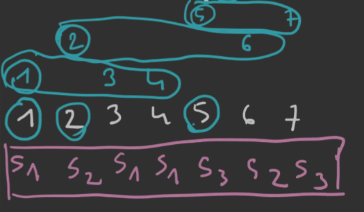

1. DEF
Sn(r) — liczba partycji zbioru n-elementowego na r niepustych podzbiorów.
2. Notacja
Sn(r)={mn}=S(n,r)
3. Przykład
Weźmy na przykład zbiór {5,4,2,6,7,1,3}. Chcemy go podzielić na 3 podzbiory.
- wybieramy najpierw liderów zbiorów: 1,2,5
- dobieramy następnych członków danego podzbioru tak, aby nowi członkowie nie byli mniejsi niż lider: {1,3,4},{2,6},{5,7}
Możemy zobaczyć nasz zbiór z podziałami w wersji posortowanej:

Ustalmy klasę kombinatoryczną: S(z)=s1×SEQ(s1)×s2×SEQ(s1+s2)×s3×SEQ(s1+s2+s3) (gdzie si to wyznaczone podzbiory)
czyli OGF: z1−z1⋅z⋅1−2z1⋅z⋅1−3z1=z3⋅(1−z)(1−2z)(1−3z)1=S(3)(z)
Naturalne jest więc, że {3n}=[zn]S(3)(z).
4. OGF
W wersji ogólnej: S(r)(z)=zr(1−z)(1−2z)⋯(1−rz)1.